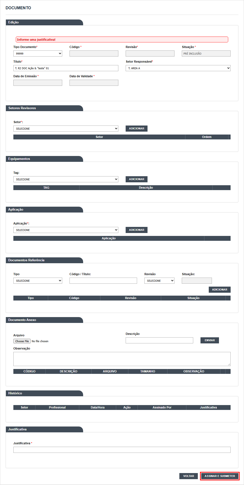
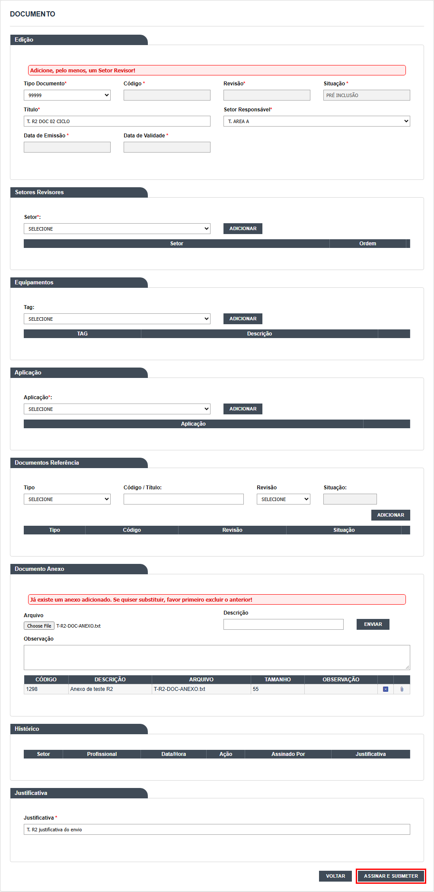
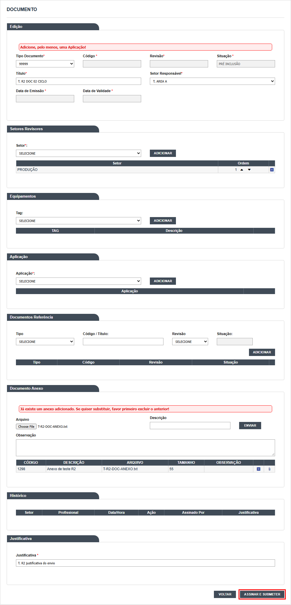
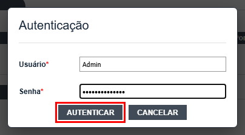
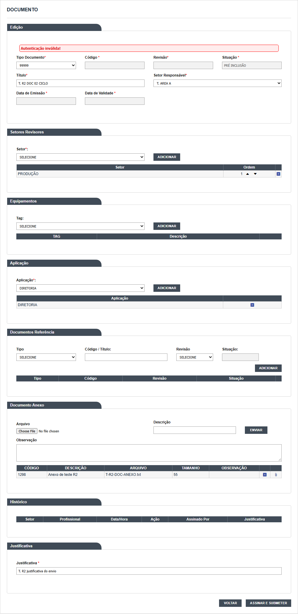
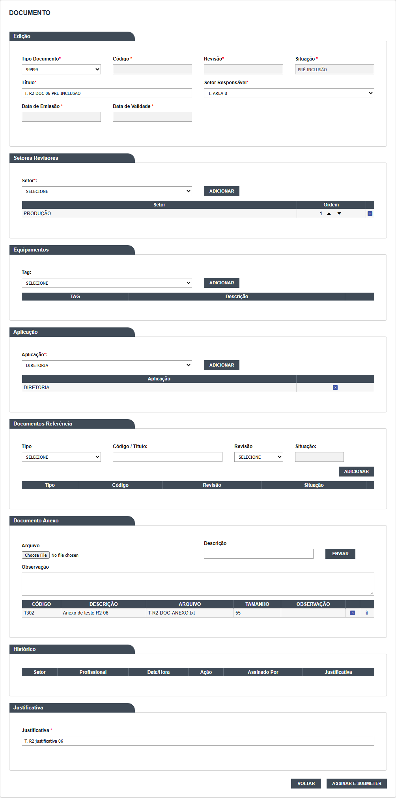
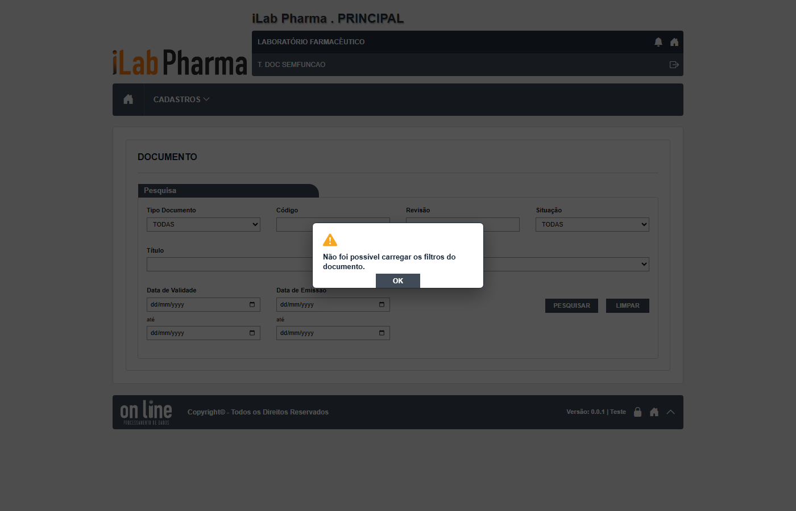

O que acontece ao confirmar ou salvar
- Salvar (inclusão): grava o cadastro com a situação PRÉ INCLUSÃO, sem código e sem datas, e abre a edição. A criação aparece no Log ("INCLUSÃO DO REGISTRO"), mas não no quadro Histórico (DV-DOC-N-002).
- Assinar e submeter: confere os campos, pede a assinatura (usuário e senha de quem submete), grava e muda para PENDENTE ANÁLISE CRÍTICA; a Revisão aparece como 00. O envio aparece no Log e não no quadro Histórico. A tela não confirma o resultado (DV-DOC-N-012).
- Excluir: muda para EXCLUÍDO; o documento sai da lista de Revisão. O Log registra a mudança de situação com a justificativa; o quadro Histórico fica vazio (DV-DOC-024 do legado, repete).
O que o sistema recusa
| Situação | Mensagem exata | Observação |
|---|---|---|
| Incluir sem tipo, título e setor | "Selecione um Tipo de Documento!", "Defina um Título!", "Selecione um Setor Responsável!" | As três juntas (CT-DOC-N-01). |
| Enviar sem justificativa | "Informe uma justificativa!" | CT-DOC-001. |
| Enviar sem anexo | "Anexo pendente!" | Ordem das conferências, confirmada em 19/11: justificativa, anexo, setor revisor, aplicação. |
| Enviar sem setor revisor | "Adicione, pelo menos, um Setor Revisor!" | |
| Enviar sem aplicação | "Adicione, pelo menos, uma Aplicação!" | |
| Segundo anexo | "Já existe um anexo adicionado. Se quiser substituir, favor primeiro excluir o anterior!" | CT-DOC-N-08. A faixa não some depois (DV-DOC-N-015). |
| Senha errada na assinatura | "Autenticação inválida!" | O documento continua em PRÉ INCLUSÃO (CT-DOC-007); conferido na lista. |
| Excluir sem justificativa | "A justificativa é obrigatória!" | Aparece dentro da própria caixa. |
| Perfil sem função do módulo | "Não foi possível carregar os filtros do documento." | Servidor responde 403 (DV-DOC-N-006); texto da rodada de 04/11, não revisto em 19/11. |



As quatro imagens acima mostram a faixa vermelha de cada recusa no alto da edição, com o botão ASSINAR E SUBMETER marcado; na terceira e na quarta, a faixa do segundo anexo ainda aparece no quadro Documento Anexo.


A segunda imagem mostra a faixa vermelha "Autenticação inválida!" no alto da edição, com a situação ainda em PRÉ INCLUSÃO.


A imagem acima (rodada de 04/11/2026) mostra a caixa "Não foi possível carregar os filtros do documento." para um usuário sem a função do módulo.
Campos da tela
| Campo | Tipo | Tamanho | Obrigatório | Valores e regra | Observação |
|---|---|---|---|---|---|
| Tipo Documento | Lista | — | Sim | Tipos ativos (14 no teste, de 12345 a 4455) | Define código automático e exigência de treinamento |
| Código | Texto | até 20 (filtro) | Não (bloqueado) | Sai na aprovação (automático) ou é digitado na aprovação; em branco até lá | |
| Revisão | Número | — | Não (bloqueado) | Em branco em PRÉ INCLUSÃO; aparece 00 depois do envio (no PDF sai "0") | Nova revisão não testada (DV-DOC-N-007) |
| Situação | Lista (filtro) | — | Bloqueado | EM INCLUSÃO na tela de inclusão; PRÉ INCLUSÃO depois de salvar; o filtro tem 9 situações | DV-DOC-027 (legado, repete: dois nomes) |
| Título | Texto | até 300 | Sim | Aceita acento, "&" e aspas (testado) | O campo corta no 300º caractere |
| Setor Responsável | Lista | — | Sim | Setores da Estrutura funcional | |
| Data de Emissão / Validade | Data | — | Não (bloqueadas) | Preenchidas na Vigência | |
| Setores Revisores | Lista + ordem | — | Sim, ao menos um | A ordem define quem revisa primeiro | Conferido no envio |
| Aplicação | Lista | — | Sim, ao menos uma | Setor onde o documento vai valer; TODOS vira uma linha por setor | Conferido no envio |
| Tags (Equipamentos) e Documentos Referência | Lista | — | Não | Opcionais | Quadros existem; não preenchidos no teste |
| Documento Anexo | Arquivo | um arquivo | Sim | Aceitou .txt; .exe e PDF de 0 byte não foram repetidos em 19/11 | DV-DOC-025 (legado) |
| Justificativa | Texto | — | Sim (conferida pela tela) | "Informe uma justificativa!" | |
| Usuário e senha | Texto | — | Sim | Da pessoa que assina |
Quem pode usar (permissões)
Resultado dos testes de 04 e 10/11/2026 (pelo comportamento da tela); não repetido em 19/11/2026 (só a conta de administrador foi usada):
| Perfil de teste | Abrir a lista | Criar o documento | Setor revisor, aplicação, anexo e histórico |
|---|---|---|---|
| Administrador de teste | Sim | Sim | Sim |
| Perfil só com função Documento (elaborador, 76 de 76 funções do módulo) | Sim | Sim (201) | Não: 403 (DV-DOC-N-001) |
| Perfil de consulta (só Visualizar) | Erro ao carregar filtros | 403 | 403 |
| Perfil sem função do módulo | Erro ao carregar filtros | 403 | 403 |